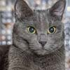
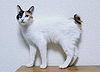
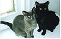
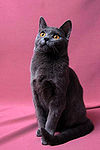
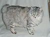
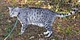
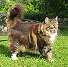
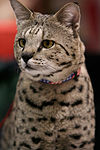
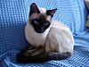
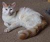

Guia de raças
Há quem acredite que os gatos são todos iguais – e chegou a hora de acabar, de uma vez por todas, com esse mito. Existem diferentes raças de gatos que, assim como os cachorros, possuem pelagens, aparências e comportamentos diferentes.
| Raça | Origem | Foto |
|---|---|---|
| Abissínio / Abyssinian | Etiópia |  |
| Angorá turco / Turkish angora | Turquia |  |
| Asiático de Pelo Semi-Longo / Asian Semi-longhair | Reino Unido | |
| Azul Russo / Russian Blue | Rússia |  |
| Balinês / Balinese | Estados Unidos | |
| Bambino / Bambino cat | Estados Unidos | |
| Bicolor Oriental / Oriental Bicolour | Estados Unidos | |
| Bobtail Americano / American Bobtail | Estados Unidos | |
| Bobtail japonês / Japanese Bobtail | Japão |  |
| Bombaim / Bombay | Estados Unidos | |
| Burmês / Burmese | Tailândia |  |
| Burmila | Reino Unido | |
| California Spangled | Estados Unidos | |
| Cingapura / Singapura | Singapura |  |
| Chartreux | França |  |
| Chausie | França |  |
| Colorpoint de pelo curto / Colorpoint Shorthair | Estados Unidos / Inglaterra |  |
| Cornish Rex | Reino Unido | |
| Curl Americano / American Curl | Estados Unidos |  |
| Devon Rex | Reino Unido | |
| Donskoy | Rússia | |
| Dragon Li | China | |
| Egeu / Aegean | Grécia |  |
| Exótico / Exotic Shorthair | Estados Unidos | |
| Gato asiático / Asian Cat | Reino Unido | |
| Gato-de-Bengala / Bengal | Estados Unidos | |
| Gato do Chipre / Cyprus Cat | Chipre | |
| Gato Siberiano / Siberian | Rússia | |
| Havana marrom / Havana Brown | Reino Unido | |
| Himalaio / Himalayan | Nepal | |
| Javanês / Javanese | Estados Unidos | |
| Khao Manee | Tailândia | |
| Korat | Tailândia |  |
| Kurilian Bobtail | Rússia |  |
| LaPerml | Estados Unidos | |
| Levkoy ucraniano / Ukrainian Levkoy | Ucrânia | |
| Lykoi | Estados Unidos | |
| Maine Coon | Estados Unidos |  |
| Manx | Reino Unido | |
| Manx de pelo longo / Manx Longhair Cymric | Canadá | |
| Mau Árabe / Arabian Mau | Arábia Saudita / Emirados Árabes Unidos | |
| Mau egípcio / Egyptian Mau | Egito |  |
| Minskin | Estados Unidos |  |
| Mist Australiano / Australian Mist | Austrália | |
| Munchkin | Estados Unidos | |
| Nebelung | Estados Unidos | |
| Norueguês da Floresta / Norwergian Forest Cat | Noruega |  |
| Ocicat | Estados Unidos | |
| Ojos Azules | Estados Unidos | |
| Oregon Rex | Estados Unidos |  |
| Pelo curto americano / American Shorthair | Estados Unidos | |
| Pelo curto brasileiro | Brasil |  |
| Pelo curto Europeu / European Shorthair | Suécia |  |
| Pelo curto inglês / British Shorthair | Reino Unido | |
| Pelo longo Inglês / British Longhair | Reino Unido | |
| Pelo curto Oriental / Oriental Shorthair | Estados Unidos | |
| Pelo longo Oriental / Oriental Longhair | Inglaterra | |
| Persa / Persian | Irã | |
| Peterbald | Rússia | |
| Pixie-bob | Estados Unidos | |
| Raas | Indonésia | |
| Ragamuffin | Estados Unidos | |
| Ragdoll | Estados Unidos | |
| Rex Alemão / German Rex | Alemanha | |
| Sagrado da Birmânia | Mianmar |  |
| Savannah | Estados Unidos |  |
| Scottish Fold | Escócia | |
| Selkirk Rex | Estados Unidos | |
| Sem raça definida (SRD) | - | |
| Serengeti | Estados Unidos | |
| Siamês / Siamese | Tailândia | |
| Snowshoe | Estados Unidos | |
| Sokoke | Quênia | |
| Somali | Estados Unidos | |
| Sphynx | Canadá | |
| Suphalak | Tailândia | |
| Thai | Tailândia |  |
| Tiffany-Chantilly / Chantilly-Tiffany | Estados Unidos | |
| Tonquinês / Tonkinese | Canadá | |
| Toyger | Estados Unidos | |
| Van Turco / Turkish Van | Turquia |  |
| Wirehair Americano / American Wirehair | Estados Unidos |